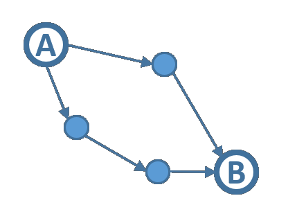
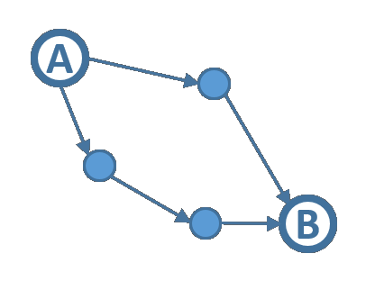

Session History (-)
Your query history will be displayed here. It can be edited or re-set.


 


Query Graph Input:
Edit Query Node╳
| Node ID | |
| ids | |
| Bulk import: | |
| categories | |
| constraints | |
| New constraint Id: | |
| Name: | |
| Value: | |
| Unit Id and Name: | |
| is_set | |
| option_group_id | |
Dismiss
Edit Query Edge╳
Query submission on this tab submits without a workflow:
Go to Settings to configure URLs
JSON Input:
Enter a full Query object or the value of the query_graph element Example 1 Example 2 Example 3 PathfinderPathFinder Input:
Pathfinder queries allow you to explore pathways connecting two concepts, optionally with an intermediate node of a required category in the returned paths.
DSL Input:
One line per DSL command, no quotes or commas; more info hereExampleWorkflow Input:
Please edit the Query Graph separately; more info hereJSON:
Import from response id or URL: Import from QG pane╳
Submission on this tab submits both a query_graph and a workflow:
Go to Settings to configure URLs
Enter a TRAPI Response identifier or a URL to a response to load:
Response Input:
DRAG a file (or copy-paste) with a JSON TRAPI Response into the box belowLatest Responses:
responses (max.40), from:Click on the button above to view a list of the most recent responses
List A (-)
Items in this list can be compared to those in List B, or added to a node in the query_graph via the bulk import functionality.
List B (-)
Items in this list can be compared to those in List A, or added to a node in the query_graph via the bulk import functionality.
Compare Lists A and B
Items in lists A and B will be automatically displayed side-by-side for ease of comparison.
KNOWLEDGE GRAPH
Action, Chemical, Choose, Drug, Mixture, Molecule, Nano, Physiology, and Protein icons created by Freepik - Flaticon
Diseases icons created by Vector Stall - Flaticon
Medicine icons created by max.icons - Flaticon
Personality icons created by Parzival 1997 - Flaticon
Body icons created by SBTS2018 - Flaticon
Biotech icons created by kliwir art - Flaticon
Gene icons created by Iconiic - Flaticon
Cell icons created by dDara - Flaticon
Nutrition icons created by FBJan - Flaticon
Ontology icons created by Alla Afanasenko - Flaticon
Taxonomy icons created by Talha Dogar - Flaticon
Generic icons created by Archival - Flaticon
Quick Filter
Filter Paths by Nodes╳
Synonym Lookup:
╳
Enrich Gene Sets via the PIGEAN Framework:
Import from:╳
p-value cutoff:
Recent ARAX System Activity
-- or --
hours (max.200)
Click on a button above to view/refresh most recent ARAX services activity
Click on a button above to view/refresh most recent ARAX services activity
SmartAPI Information
[ Direct link to this page ]
Click on the button above to view SmartAPI info table
KP Cache Information
[ Direct link to this page ]
Click on the button above to view KP Cache info
Translator Testing
[ Direct link to this page ]
Select Test Report to view:
(or drag a JSON test results file)
Click on the button above to view Translator system test results, or drag a JSON file with test results into this box
API Settings
REMOTE API TIMEOUT DURING ARAX EXPANSION (leave blank for default):
secondsDEFAULT PRUNING THRESHOLD DURING ARAX EXPANSION:
nodesMAXIMUM NUMBER OF PATHFINDER RESULTS TO RETURN:
pathsMAXIMUM PATH LENGTH FOR PATHFINDER RESULTS:
(max. 5)BASE API URL (ARAX):
ARAX QUERY URL:
ARS API (post query):
EXTERNAL API (post query):
Session Settings
MAXIMUM NUMBER OF RESULTS TO DISPLAY (very large values may crash UI):
resultsMAXIMUM NUMBER OF SYNONYMS TO DISPLAY (values above 1000 may slow down UI):
nodesNODE DISPLAY:
SUBMITTER (enter a generic name to help track queries):
Local Cache (-)
A list of cached responses will be displayed here. It can be edited or re-set.